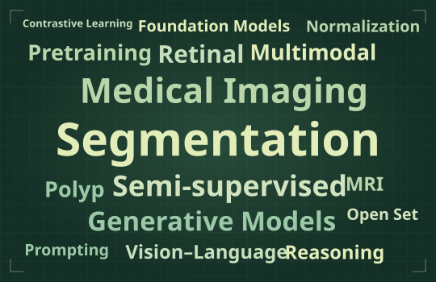

Multimodal AI多模态人工智能
Vision–language models and multimodal large language models, with an interest in open-world transfer and continual learning.
视觉语言模型与多模态大语言模型，关注开放世界迁移学习与持续学习。
Associate Professor · Ph.D. Supervisor副教授 · 博士生导师
School of Computer Science and Engineering
Southeast University · PALM Lab东南大学计算机科学与工程学院
PALM 实验室
I study how AI can learn from multiple kinds of data, with applications in healthcare and embodied intelligence.我关注如何让 AI 从不同模态的数据中学习，并将这些方法应用于医疗健康和具身智能。

Vision–language models and multimodal large language models, with an interest in open-world transfer and continual learning.
视觉语言模型与多模态大语言模型，关注开放世界迁移学习与持续学习。
Medical image analysis and AI agents for healthcare, including multimodal learning from retinal images and text.
医学图像分析与医疗健康智能体，包括基于眼底影像和文本的多模态学习。
Vision–language–action models for embodied manipulation, connecting visual perception and language to action.
面向具身操作的视觉–语言–动作模型，研究如何将视觉感知和语言指令转化为行动。
IEEE TMI: OphthaReason and MM-Retinal-Reason explore multimodal reasoning in ophthalmology.IEEE TMI：OphthaReason 和 MM-Retinal-Reason 探索眼科多模态推理。 DOI ↗
Three CVPR papers cover medical vision–language pretraining, medical image segmentation, and visual generation.三篇 CVPR 论文分别关注医学视觉语言预训练、医学图像分割和视觉生成。 Selected papers查看代表作 ↓
MICCAI papers study reasoning for semi-supervised segmentation and angiography synthesis from fundus and OCT images.MICCAI 论文研究基于推理的半监督分割，以及利用眼底图像与 OCT 合成荧光血管造影图像。
I am an associate professor and Ph.D. supervisor at Southeast University, where I also serve as deputy head of the Department of Computer Science. I work with PALM Lab and the Ministry of Education Key Laboratory of New Generation Artificial Intelligence Technology and Its Interdisciplinary Applications.
我是东南大学计算机科学与工程学院副教授、博士生导师，现任计算机科学系副主任，在 PALM 实验室及新一代人工智能技术与交叉应用教育部重点实验室开展研究。
I am an IEEE Senior Member and have served as an area chair for AAAI and MICCAI. I teach Machine Vision and Applications.
我是 IEEE 高级会员，曾担任 AAAI 和 MICCAI 领域主席，讲授《机器视觉与应用》课程。
Official university profile学校个人主页 ↗I welcome prospective Ph.D. and master’s students, as well as undergraduates looking for research experience. If our research interests overlap, please email me with a short introduction and the topics you’d like to explore.
欢迎对相关方向感兴趣的博士生、硕士生和希望开展科研训练的本科生联系我。如果你对我们的研究感兴趣，欢迎来信简要介绍自己，并说明你想探索的问题。
yizhou@seu.edu.cn ↗